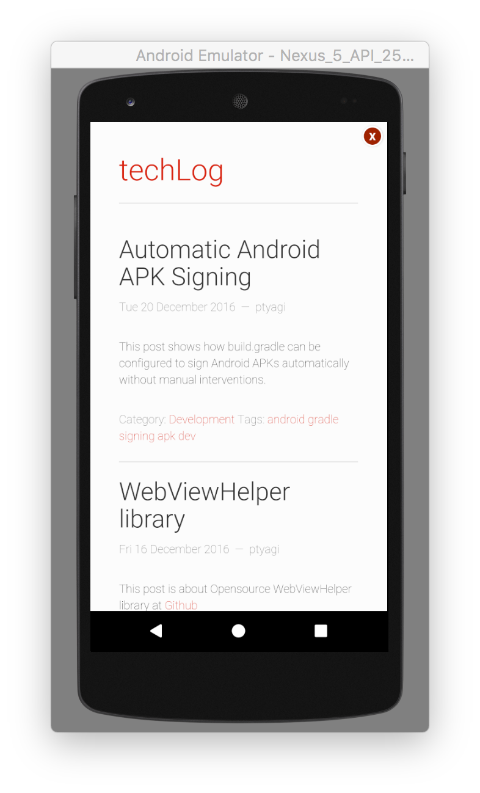
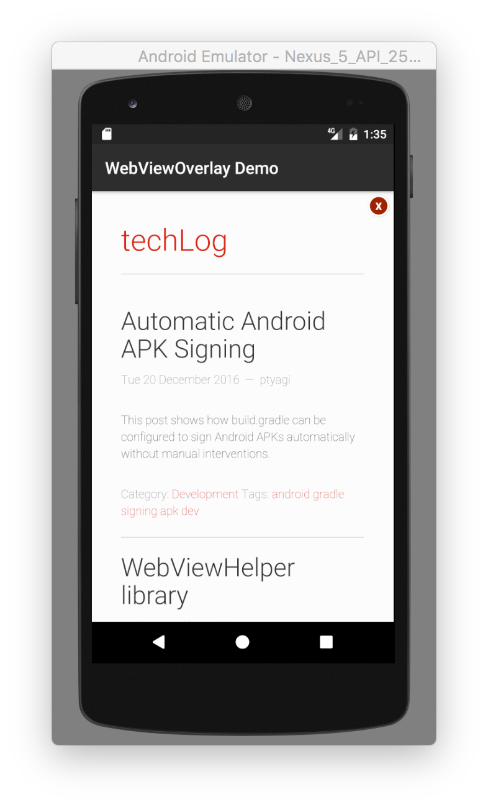

Android WebViewOverlay Widget
Posted by ptyagi in Development
Motivation
I needed a widget that can load a url in WebView in a full-screen closable overlay/modal. I wanted to re-use this new, shiny widget in my other projects as well. So, I decided to upload WebViewOverlay library in a central artifact repository. I chose JCenter because its one of the largest artifact repository for Java and Android libraries and has good integration with Android Studio IDE. If you're interested in learning how did I publish Android libary to JCenter, then this post will be helpful for you.
Introduction
This article describes how WebViewOverlay Widget can be integrated to your Android App in few minutes.
Integrating WebViewOverlay widget in your app is as simple as adding following line in your project's
build.gradle:
compile 'org.ptyagicodecamp:WebViewOverlay:1.0.2'
WebViewOverlay Widget
WebViewOverlay widget loads a WebView widget in a full screen pop-up or modal. It has option to close it by clicking on top-right corner 'x'
API
There're two APIs to load WebView either in full-screen mode or in a dialog with a custom title.
Full Screen Overlay
void loadWebViewOverlay(String urlToBeLoaded, HashMap<String, String> params);

Full Screen Overlay With Custom Title
void loadWebViewOverlay(String urlToBeLoaded, HashMap<String, String> params, String popupTitle);

Integration
In Android Studio, it can be added to your project by adding following in build.gradle
compile 'org.ptyagicodecamp:WebViewOverlay:1.0.2'
Initialization
WebViewOverlay widget can be initialized in Activity or BaseActivity's onCreate() method.
WebViewOverlay webViewOverlay;
@Override
protected void onCreate(Bundle savedInstanceState) {
super.onCreate(savedInstanceState);
setContentView(R.layout.activity_main);
webViewOverlay = new WebViewOverlay(this);
}
Usage
After initializing widget, it can simply be used by calling either of the API. Here's examples to demonstrate both APIs:
public void openWebViewOverlay(View view) {
String url = "https://ptyagicodecamp.github.io";
webViewOverlay.loadWebViewOverlay(url, null);
}
public void openWebViewOverlayWithTitle(View view) {
String url = "https://ptyagicodecamp.github.io";
webViewOverlay.loadWebViewOverlay(url, null, "WebViewOverlay Demo");
}
If you're interested in checking out source code, then its available here at Github
Comments